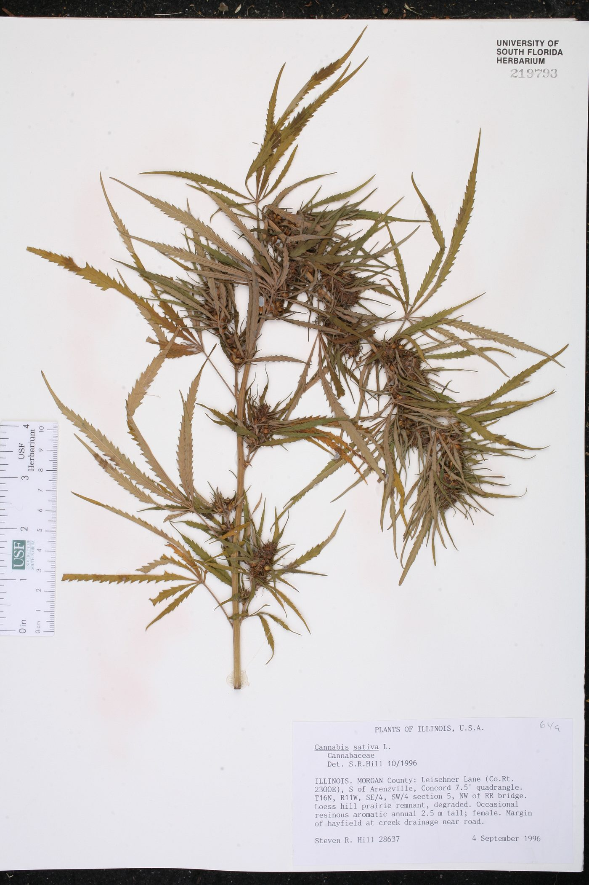
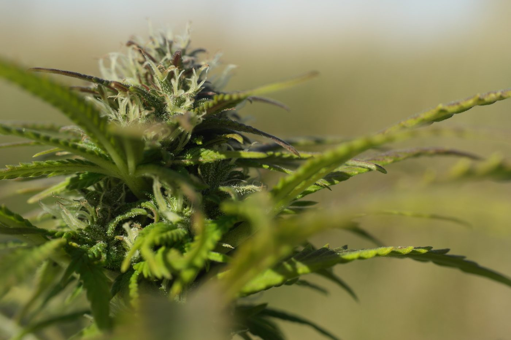
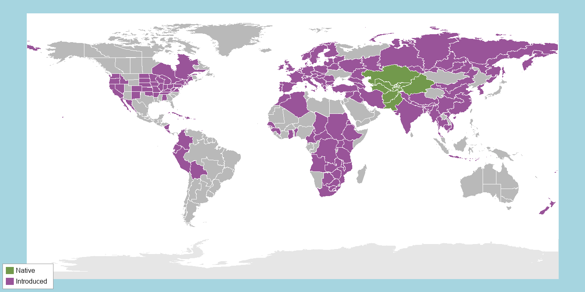

AIdentifying Features
Hemp is an erect annual herb that typically grows 1–5 m tall on a single, ridged, fibrous stem — the same tough fiber that has made it valuable to humans for millennia. Its signature feature is the palmately compound leaf: 5 to 9 narrow, finely serrated, linear-lanceolate leaflets radiate from a central point on a long petiole, like fingers on a hand (Nakkliang et al., 2022). Lower leaves are arranged in opposite pairs; higher up the stem they switch to an alternate arrangement. Leaves are dark green above and paler, rougher-textured below (Nakkliang et al., 2022).
Cannabis is dioecious — individual plants are either male or female, never both (McPartland, 2018). Male plants bear small, pale, loosely branched clusters of flowers that dangle and release pollen to the wind. Female plants produce dense clusters of flowers wrapped in leafy bracts; as these mature they become coated in sticky, resin-producing glandular trichomes, giving the flower clusters a frosted, gray-green look and a strong, pungent aroma (Punja et al., 2023). After pollination, each female flower produces a single small, hard-shelled, mottled brown seed (an achene) only a few millimeters long.

Herbarium specimen (female plant) showing palmate, serrated leaflets. Collected by S. R. Hill, Morgan Co., Illinois, 1996.
Source: Wunderlin et al., 2025, USF Herbarium Accession No. 219793.

Female flower cluster coated in glandular trichomes.
Photo: Skalle-Per Hedenhös (2012), Wikimedia Commons, CC BY-SA 4.0
BHabitat & Range
Genomic and archaeobotanical evidence points to Central Asia as the cradle of Cannabis sativa, with wild and feral ancestral populations concentrated across the Eurasian steppe — from the Altai region and southern Siberia through Mongolia into Xinjiang, in northwestern China (Ren et al., 2021; Long et al., 2017). As a "camp-follower" species, it evolved alongside disturbed, nitrogen-enriched ground: riverbanks, floodplains, field margins, and the edges of human settlements within the open grassland-steppe matrix. It favors full sun, loose well-drained soil, and a temperate climate with a distinct cool season, and does not tolerate deep shade or waterlogged ground.
Because humans have cultivated it for fiber, seed oil, and its psychoactive/medicinal compounds for thousands of years, hemp's current range now spans nearly every inhabited continent, and it has naturalized well beyond its native steppe — but its ancestral wild gene pool remains rooted in Central Asia (Halpin-McCormick et al., 2025).

Native range (green) vs. introduced/naturalized range (purple).
Distribution data: POWO, 2025. Region boundaries: TDWG WGSRPD Level 3 (Brummitt, 2001).
CBiology & Ecology
☀️ Photosynthetic Pathway
Hemp uses standard C3 photosynthesis, fixing carbon through the Calvin cycle via the enzyme Rubisco. Leaf-level gas-exchange studies show hemp's photosynthetic rate rising with temperature up to an optimum around 25–30 °C in fiber-type plants before declining sharply above roughly 35 °C, as Rubisco increasingly reacts with oxygen instead of CO₂ and triggers wasteful photorespiration (Chandra et al., 2011; Chandra et al., 2008). That relatively cool optimum — well below the 40 °C+ summer highs typical of hot arid or tropical lowlands — is a strong match for hemp's native Central Asian steppe, where growing-season temperatures are milder and a C4 or CAM pathway's extra investment in heat- and drought-tolerance machinery would be unnecessary (Tang et al., 2017).
💧 Resource Acquisition Strategy
Strategy — fast, efficient nitrogen capture. Hemp is a nitrogen-demanding "nitrophile" that thrives on disturbed, nutrient-rich ground such as riverbanks and old settlement middens, the microhabitats scattered across its native steppe (Saloner & Bernstein, 2020). It acquires nitrogen and water unusually efficiently for such rapid growth, converting both into biomass with high whole-canopy water- and nitrogen-use efficiency (Tang et al., 2018).
Structures. A central taproot drives deep into the soil to reach subsoil moisture and nitrate, while a dense mat of fine lateral roots harvests nutrients near the surface, together fueling the fast vertical growth of a single-season annual.
Ecosystem-scale cycling. Because hemp takes up nitrogen so heavily and so quickly, it draws down the soil nitrogen pool, and its deep taproot can intercept nitrate that has leached below the reach of shallower-rooted plants — behaving like a "catch crop" that keeps nitrogen from escaping to groundwater. The same vigorous root system makes hemp an effective phytoremediator: it pulls heavy metals and surplus nutrients out of contaminated soils and concentrates them in root and stem tissue, moving those elements out of the soil pool (Flajšman et al., 2023).
Impact on other species. Its heavy nitrogen appetite paired with rapid canopy closure lets hemp out-race neighboring grassland vegetation for both nutrients and sunlight, and when its residues decompose, a portion of the captured nitrogen is returned to the soil for the plants and soil organisms that follow.
🌸 Reproductive Strategy
Sexual, asexual, or both? Hemp reproduces almost entirely sexually and does not spread vegetatively in the wild. It is normally dioecious — individual plants are either male or female — which forces outcrossing between separate plants and keeps the gene pool diverse (Moliterni et al., 2004). Its one exception is a built-in backup: under environmental or hormonal stress, a female plant can develop some male (hermaphroditic) flowers and pollinate itself, ensuring at least some seed set when mates or conditions are poor (Punja & Holmes, 2020). So the strategy is predominantly sexual outcrossing, with occasional self-pollination as a fallback.
Pollinators. None — hemp is wind-pollinated (anemophilous), so it invests nothing in attracting animals. Instead, male plants produce enormous quantities of tiny, lightweight pollen; a single male can release hundreds of thousands of grains that ride the wind for 300 km or more (Small & Antle, 2003).
Fertilization. Wind carries that pollen to the feathery stigmas of female flowers. A pollen grain that lands there germinates and grows a pollen tube down into the flower, delivering sperm to the egg cell inside the ovule to complete fertilization.
Seeds & dispersal. Hemp makes seeds (hard-shelled achenes), not spores. Most are relatively heavy and simply fall near the parent by gravity, building a long-lived soil seed bank that lets populations reappear on disturbed steppe ground year after year; birds and small mammals that eat the oil-rich seeds carry some farther afield, and humans have moved hemp seed across continents for thousands of years.
🐝 Species Interactions
The interaction — chemical defense against insect herbivores. Hemp's sticky glandular trichomes do more than make the flowers look frosty: they manufacture cannabinoids (such as THC, CBD, and their acids) that act as a chemical shield against the insects that try to eat the plant — from chewing caterpillars like the cabbage looper to sap-sucking cannabis aphids (Stack et al., 2023; MacWilliams et al., 2023).
How it helps the plant. Leaves and flowers with more cannabinoids suffer noticeably less damage: caterpillars eat less and grow poorly, and aphids feed, survive, and reproduce far less successfully on high-cannabinoid plants (MacWilliams et al., 2025). By protecting its leaves and especially its reproductive flower clusters from being eaten, the plant conserves the resources it needs for growth and seed production. The defense is not strictly essential — hemp survives where herbivores are scarce — but where pests are present it meaningfully improves the plant's survival and reproductive fitness.
Impact on the other species (−). Negative for the herbivores: the cannabinoids deter their feeding and lower their growth, survival, and reproduction.
References for this Species
APA 7 format. Sources used for text are listed first; image sources follow and do not count toward the per-species source minimum. Full running list, organized by species, also appears on the References page.
- Halpin-McCormick, A., Maaz, T. M., Kantar, M. B., Barton, K. E., Masalia, R. R., Batora, N., Law, K., & Kuntz, E. J. (2025). Species distribution of Cannabis sativa: Past, present and future. PLOS ONE, 20(3), Article e0306007. https://doi.org/10.1371/journal.pone.0306007 Peer-reviewed
- Long, T., Wagner, M., Demske, D., Leipe, C., & Tarasov, P. E. (2017). Cannabis in Eurasia: Origin of human use and Bronze Age trans-continental connections. Vegetation History and Archaeobotany, 26(2), 245–258. https://doi.org/10.1007/s00334-016-0579-6 Peer-reviewed
- McPartland, J. M. (2018). Cannabis systematics at the levels of family, genus, and species. Cannabis and Cannabinoid Research, 3(1), 203–212. https://doi.org/10.1089/can.2018.0039 Peer-reviewed
- Nakkliang, K., Areesantichai, C., & Rungsihirunrat, K. (2022). Assessment of pharmacognostic specification of Cannabis sativa leaves in Thailand. Journal of Advanced Pharmaceutical Technology & Research, 13(3), 226–231. https://doi.org/10.4103/japtr.japtr_96_22 Peer-reviewed
- Punja, Z. K., Sutton, D. B., & Kim, T. (2023). Glandular trichome development, morphology, and maturation are influenced by plant age and genotype in high-THC-containing cannabis (Cannabis sativa L.) inflorescences. Journal of Cannabis Research, 5(1), Article 12. https://doi.org/10.1186/s42238-023-00178-9 Peer-reviewed
- Ren, G., Zhang, X., Li, Y., Ridout, K., Serrano-Serrano, M. L., Yang, Y., Liu, A., Ravikanth, G., Nawaz, M. A., Mumtaz, A. S., Salamin, N., & Fumagalli, L. (2021). Large-scale whole-genome resequencing unravels the domestication history of Cannabis sativa. Science Advances, 7(29), Article eabg2286. https://doi.org/10.1126/sciadv.abg2286 Peer-reviewed
- Saloner, A., & Bernstein, N. (2020). Response of medical cannabis (Cannabis sativa L.) to nitrogen supply under long photoperiod. Frontiers in Plant Science, 11, Article 572293. https://doi.org/10.3389/fpls.2020.572293 Peer-reviewed
- Small, E., & Antle, T. (2003). A preliminary study of pollen dispersal in Cannabis sativa in relation to wind direction. Journal of Industrial Hemp, 8(2), 37–50. https://doi.org/10.1300/J237v08n02_03 Peer-reviewed
- Small, E., & Cronquist, A. (1976). A practical and natural taxonomy for Cannabis. Taxon, 25(4), 405–435. https://doi.org/10.2307/1220524 Peer-reviewed
- Stack, G. M., Snyder, S. I., Toth, J. A., Quade, M. A., Crawford, J. L., McKay, J. K., Jackowetz, J. N., Wang, P., Philippe, G., Hansen, J. L., Moore, V. M., Rose, J. K. C., & Smart, L. B. (2023). Cannabinoids function in defense against chewing herbivores in Cannabis sativa L. Horticulture Research, 10(11), Article uhad207. https://doi.org/10.1093/hr/uhad207 Peer-reviewed
- Tang, K., Struik, P. C., Amaducci, S., Stomph, T.-J., & Yin, X. (2017). Hemp (Cannabis sativa L.) leaf photosynthesis in relation to nitrogen content and temperature: Implications for hemp as a bio-economically sustainable crop. GCB Bioenergy, 9(10), 1573–1587. https://doi.org/10.1111/gcbb.12451 Peer-reviewed
- Chandra, S., Lata, H., Khan, I. A., & ElSohly, M. A. (2011). Temperature response of photosynthesis in different drug and fiber varieties of Cannabis sativa L. Physiology and Molecular Biology of Plants, 17(3), 297–303. https://doi.org/10.1007/s12298-011-0068-4 Peer-reviewed
- Chandra, S., Lata, H., Khan, I. A., & Elsohly, M. A. (2008). Photosynthetic response of Cannabis sativa L. to variations in photosynthetic photon flux densities, temperature and CO2 conditions. Physiology and Molecular Biology of Plants, 14(4), 299–306. https://doi.org/10.1007/s12298-008-0027-x Peer-reviewed
- Tang, K., Fracasso, A., Struik, P. C., Yin, X., & Amaducci, S. (2018). Water- and nitrogen-use efficiencies of hemp (Cannabis sativa L.) based on whole-canopy measurements and modeling. Frontiers in Plant Science, 9, Article 951. https://doi.org/10.3389/fpls.2018.00951 Peer-reviewed
- Flajšman, M., Košmelj, K., Grčman, H., Ačko, D. K., & Zupan, M. (2023). Industrial hemp (Cannabis sativa L.)—A valuable alternative crop for growing in agricultural soils contaminated with heavy metals. Environmental Science and Pollution Research, 30(54), 115414–115429. https://doi.org/10.1007/s11356-023-30474-z Peer-reviewed
- Moliterni, V. M. C., Cattivelli, L., Ranalli, P., & Mandolino, G. (2004). The sexual differentiation of Cannabis sativa L.: A morphological and molecular study. Euphytica, 140(1–2), 95–106. https://doi.org/10.1007/s10681-004-4758-7 Peer-reviewed
- Punja, Z. K., & Holmes, J. E. (2020). Hermaphroditism in marijuana (Cannabis sativa L.) inflorescences—Impact on floral morphology, seed formation, progeny sex ratios, and genetic variation. Frontiers in Plant Science, 11, Article 718. https://doi.org/10.3389/fpls.2020.00718 Peer-reviewed
- MacWilliams, J., Peirce, E., Pitt, W. J., Schreiner, M., Matthews, T., Yao, L., Broeckling, C., & Nachappa, P. (2023). Assessing the adaptive role of cannabidiol (CBD) in Cannabis sativa defense against cannabis aphids. Frontiers in Plant Science, 14, Article 1223894. https://doi.org/10.3389/fpls.2023.1223894 Peer-reviewed
- MacWilliams, J., Padimi, V., Carter, O., Brownstein, K., Stansell, Z., Gordon, T., & Nachappa, P. (2025). Assessing the adaptive role of cannabidivarinic acid (CBDVA) in aphid defense in Cannabis sativa. Journal of Cannabis Research, 7(1), Article 34. https://doi.org/10.1186/s42238-025-00291-x Peer-reviewed
- Canadian Food Inspection Agency. (2021). The biology of Cannabis sativa L. (Cannabis, hemp, marijuana). Government of Canada. https://inspection.canada.ca/en/plant-varieties/plants-novel-traits/applicants/directive-94-08/biology-documents/cannabis-sativa
- Claude. (2026). Assistance with brainstorming and synthesizing information for Photosynthetic Pathways [Large language model]. Anthropic. https://claude.ai
- Claude. (2026). Assistance with brainstorming and synthesizing information for Resource Acquisition Strategies [Large language model]. Anthropic. https://claude.ai
- Claude. (2026). Assistance with brainstorming and synthesizing information for Reproductive Strategies [Large language model]. Anthropic. https://claude.ai
- Claude. (2026). Assistance with brainstorming and synthesizing information for Species Interactions [Large language model]. Anthropic. https://claude.ai
Image & map sources (not counted toward the per-species source minimum):
- Chmee2. (2010). Cannabis sativa plant (4) [Photograph]. Wikimedia Commons. https://commons.wikimedia.org/wiki/File:Cannabis_sativa_plant_(4).JPG. CC BY 3.0.
- Skalle-Per Hedenhös. (2012). Hampa Cannabis sativa L. (närbild) [Photograph]. Wikimedia Commons. https://commons.wikimedia.org/wiki/File:Hampa_Cannabis_sativa_L._(närbild).jpg. CC BY-SA 4.0.
- POWO. (2025). Cannabis sativa L. In Plants of the World Online. Royal Botanic Gardens, Kew. Retrieved July 15, 2026, from https://powo.science.kew.org/taxon/urn:lsid:ipni.org:names:306087-2. Distribution data CC BY 3.0.
- Harvey, J. (2008). BlankMap-World-Equirectangular [Map]. Wikimedia Commons. https://commons.wikimedia.org/wiki/File:BlankMap-World-Equirectangular.svg. CC0 (public domain). Used as basemap.
- Wunderlin, R. P., Hansen, B. F., Franck, A. R., & Essig, F. B. (2025). Cannabis sativa L. [Herbarium specimen, S. R. Hill 28637, USF Accession No. 219793]. In Atlas of Florida Plants. Institute for Systematic Botany, University of South Florida. Retrieved July 15, 2026, from https://florida.plantatlas.usf.edu/specimen/details/136470.